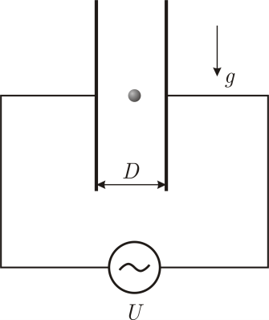

Y14 (2014) — English translation
A free molecule of hydrochloric acid ($\rm HCl$) is an electric dipole of length $L = 0.0215~\text{нм}$ and with atomic charges $+q$ and $–q$ ($q = 1.6 \cdot 10^{-19}~\text{Кл}$). The molecule was placed in a uniform electric field of strength $E = 30~\text{кВ}/\text{см}$. The masses of hydrogen and chlorine atoms are $m_1 = 1.67 \cdot 10^{-27}~\text{г}$ and $m_2 = 59.2 \cdot 10^{-27}~\text{г}$, respectively.
Note: When the dipole deviates through a large angle $\varphi_\text{max}$, the period of its oscillations will depend on the angle $\varphi_\text{max}$ according to the law: \[ T = T_0 \left[ 1 + \sum\limits_{k=1}^{\infty} \left( \frac{(2k-1)!!}{(2k)!!} \right)^2 \sin^{2k} \left( \frac{\varphi_\text{max}}{2} \right) \right] \] Double factorial is defined as follows: $k!!=k\cdot(k-2)\cdot \dots \cdot a$, where $a=2$ for even $k$ and $a=1$ for odd $k$.
\[ T = T_0 \left[ 1 + \sum\limits_{k=1}^{\infty} \left( \frac{(2k-1)!!}{(2k)!!} \right)^2 \sin^{2k} \left( \frac{\varphi_\text{max}}{2} \right) \right] \]
The double factorial is defined as: $k!!=k\cdot(k-2)\cdot \dots \cdot a$, where $a=2$ for even $k$ and $a=1$ for odd $k$.
In the chamber, evacuated to a high vacuum, there is a flat capacitor whose plates are vertical. Distance between plates $D$. In the center of the capacitor there is a small ball (its specific charge is $q_1$). An alternating voltage $U=U_0 \sin \omega t$ is applied to the capacitor plates. At the moment when the voltage went to zero, the ball was released. After some time $\tau$ the ball collided with the capacitor plate. The experiment was repeated, but this time a voltage $U = U_0 \sin^2 \omega t$ was applied to the capacitor. At the moment when the voltage went to zero, the ball was released again and it again hit the same place on the capacitor plate.

Source: https://pho.rs/p/3990